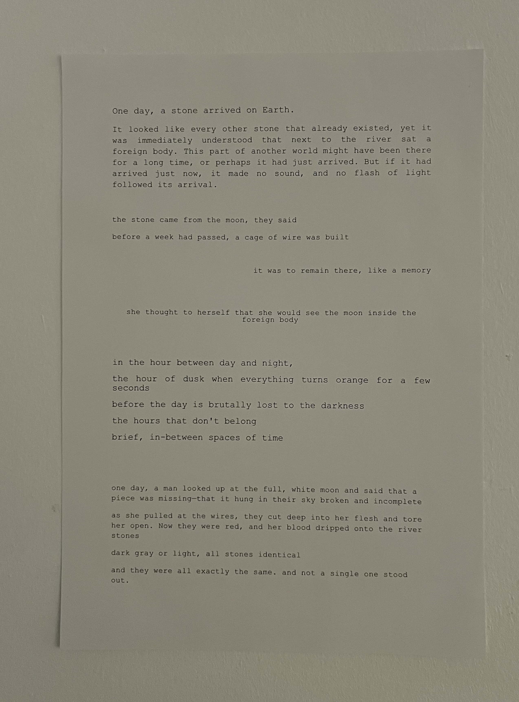
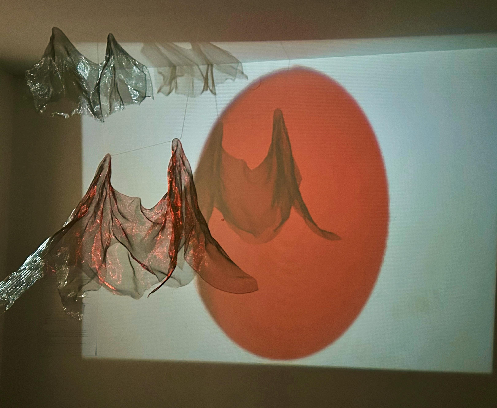
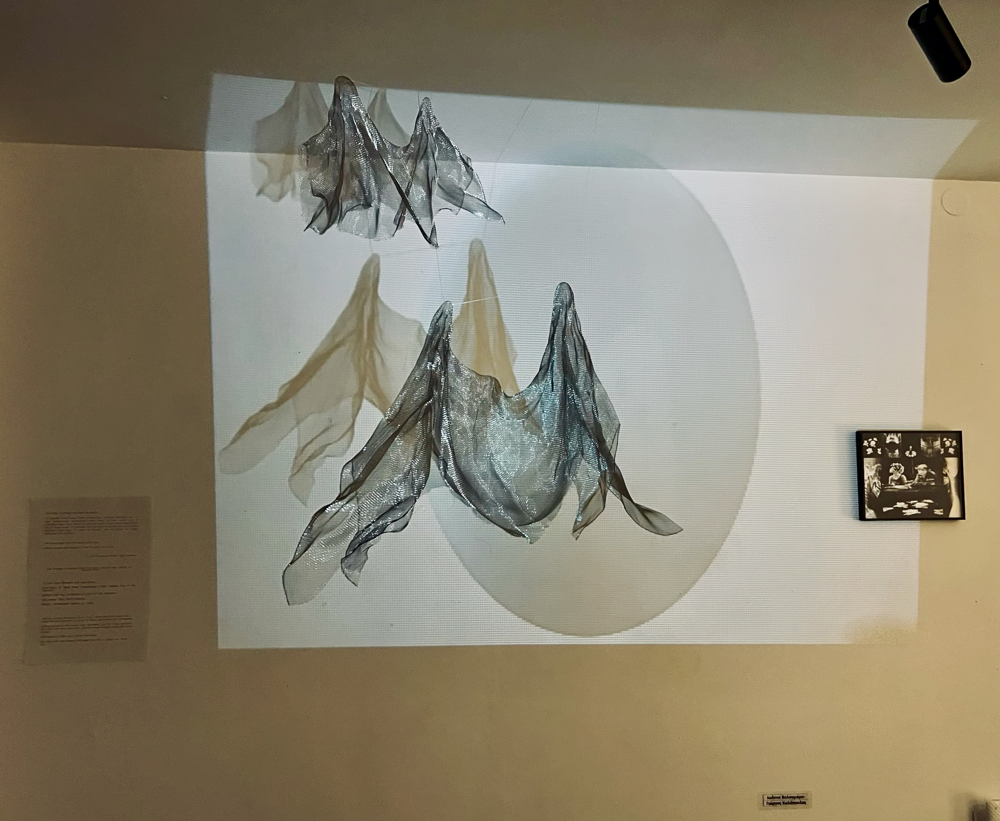

Erosion
The Foreign Body
One day, a stone arrived on Earth. It looked like every other stone that already existed, yet it was immediately understood that next to the river sat a foreign body. This part of another world might have been there for a long time, or perhaps it had just arrived. But if it had arrived just now, it made no sound, and no flash of light followed its arrival. the stone came from the moon, they said before a week had passed, a cage of wire was built it was to remain there, like a memory she thought to herself that she would see the moon inside the foreign body in the hour between day and night, the hour of dusk when everything turns orange for a few seconds before the day is brutally lost to the darkness the hours that don’t belong brief, in-between spaces of time one day, a man looked up at the full, white moon and said that a piece was missing—that it hung in their sky broken and incomplete as she pulled at the wires, they cut deep into her flesh and tore her open. Now they were red, and her blood dripped onto the river stones dark gray or light, all stones identical and they were all exactly the same. and not a single one stood out.



